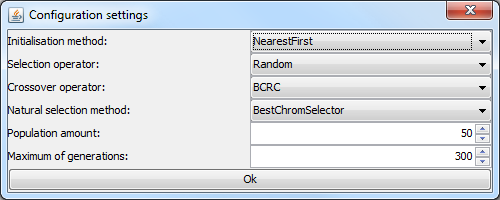

| Funktionalität :: Testfall laden / konfigurieren |
|
Das Laden eines Testfalls wird über das Menu am oberen Rand der Anwendung vorgenommen. Dabei muss der Menupunkt "File->Create New Calculation" (oder im Deutschen: "Datei->Neue Berechnung anlegen") ausgewählt werden: Menuauswahl zum Laden eines Testfalls Es wird ein Dialog zum Auswählen der Testfall Datei angezeigt. Die Testdaten befinden sich im Ordner "data" des Prototyps und besitzen den Postfix "_configuratin.xml". Beispiel: RC201_configuration.xml. Nach erfolgreichem Auswählen öffnet sich ein Konfigurationsdialog:  Konfigurationsdialog für die automatisierte Logistikplanung In diesem Dialog können alle Konfigurationen des Optimierungsverfahrens eingestellt werden. Das Initialisierungsverfahren, der Selektionsoperator, Crossoveroperator und das Ersetzungsschema. Die Anzahl von gleichzeitig existierenden Lösungen (Populationsgröße) kann wie die maximale Anzahl von Generation ebenfalls eingestellt werden. Eine genaue Beschreibung zu den einzelnen Einstellungsmöglichkeiten kann hier gefunden werden. Wurde dieser Dialog bestätigt, wird der Testfall eingeladen und die ersten Lösungsvorschläge (Tourenpläne) werden entsprechend des eingestellten Initialisierungsverfahrens generiert. Nach erfolgreichem Einladen eines Testfalls, kann das Optimierungsverfahren gestartet werden. |